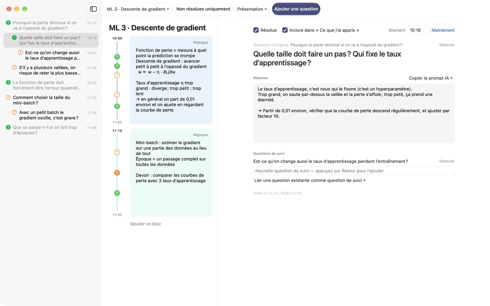
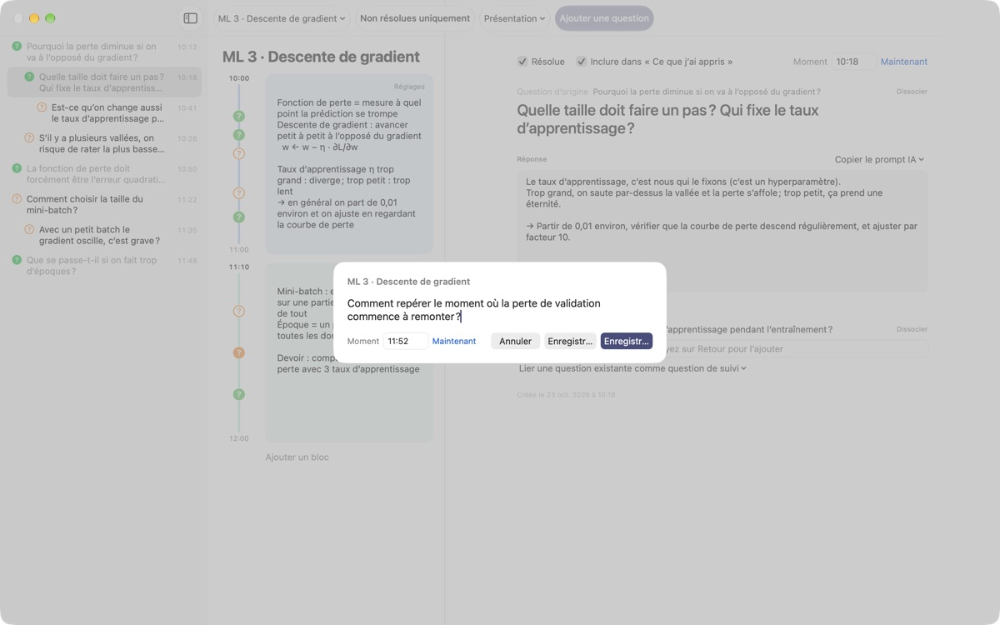
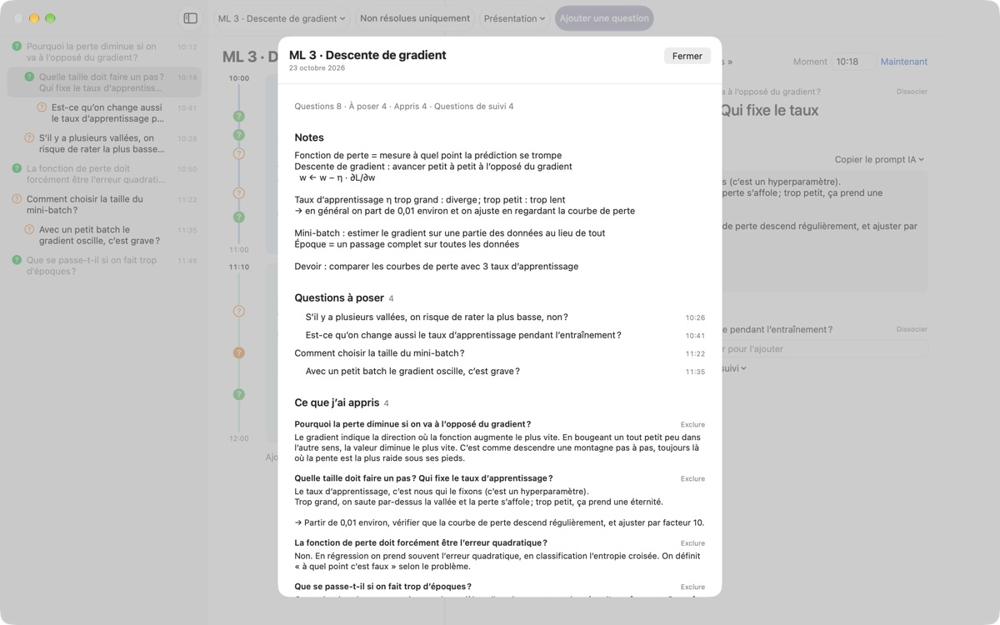
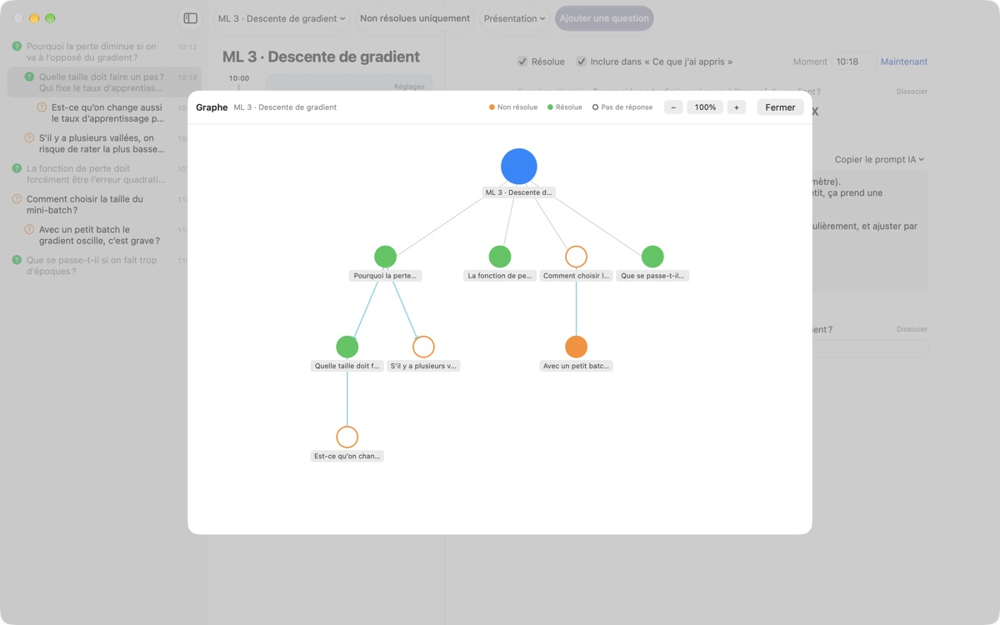

Ne laissez plus filer
les questions du cours
Appuyez sur ⌘⇧N, tapez une ligne : la question s'ajoute à côté de vos notes de cette minute précise. Vous continuez d'écouter et vous cherchez la réponse plus tard.
Pour macOS 14 ou ultérieur. Aucun compte, tout reste sur ce Mac.

Essayez ici
Vous suivez un cours d'apprentissage automatique. Tapez une question et enregistrez-la : un ? apparaît à côté du bloc de cette heure. Choisissez une heure en dehors des blocs, et un nouveau bloc se crée pour l'accueillir.
À la fin du cours, vous souvenez-vous encore de votre question ?
À peine vous dites-vous « attendez, pourquoi ? » que l'enseignant est déjà passé à la suite. Le point d'interrogation griffonné dans la marge ne sait plus à quelle explication il se rattachait, et la question reste sans réponse. LectureQ accroche chaque question à vos notes de ce moment-là et la garde sous vos yeux jusqu'à ce que vous l'ayez éclaircie.
Posez la question sans rater la phrase suivante
Ouvrez la fenêtre de saisie avec Ajouter une question dans la barre d'outils ou ⌘⇧N. L'heure se remplit toute seule. Retour enregistre, ⌘Retour enregistre et prépare aussitôt la question suivante.
Chaque question apparaît sous forme de ? à côté du bloc horaire concerné : plus tard, vous voyez tout de suite de quelle partie du cours elle vient.

Une question résolue devient un acquis
Rédigez la réponse avec vos mots, marquez la question comme résolue, et elle rejoint Ce que j’ai appris dans le résumé. Celles qui restent ouvertes se rangent dans Questions à poser : votre liste pour la séance suivante se constitue d'elle-même.Copier le prompt IA, dans le détail de la question, place dans le presse-papiers un prompt prêt à l'emploi, avec le titre du cours et vos notes de ce moment. Il ne reste qu'à le coller dans le service d'IA que vous utilisez déjà.

Voyez où votre réflexion vous a mené
Les questions de suivi s'empilent en retrait sous la question d'où elles viennent, et le graphe les relie par des flèches. Cliquez sur un nœud pour aller directement à la question.
Dans État d’apprentissage, notez où vous en êtes, où vous voulez arriver à la fin du cours et ce que vous voulez apprendre, puis comparez.

Trois étapes pour commencer
- 1
Créez un cours
Depuis le menu des cours à gauche de la barre d'outils, ou importez une conversation enregistrée en Markdown.
- 2
Notez dès que ça vient
Appuyez sur
⌘⇧N. Une ligne suffit, l'heure est déjà là. - 3
Répondez plus tard
Écrivez la réponse et cliquez sur le ? pour la marquer comme résolue. Elle passe dans Ce que j’ai appris.
Raccourcis clavier
- ⌘⇧N
- Ajouter une question
- Return
- Enregistrer
- ⌘Return
- Enregistrer et écrire la suivante
- Esc
- Annuler
- ⌘1
- Résumé : questions à poser, acquis, notes
- ⌘2
- Graphe : questions d'origine et questions de suivi
- ⌘3
- Blocs horaires : tous les blocs de tous les cours, dans l'ordre
- ⌘4
- État d’apprentissage
- ⌘+ · ⌘- · ⌘0
- Texte plus grand, plus petit, taille par défaut
Vous les retrouvez tous dans le menu Présentation.
Toutes les fonctions sont gratuites
Gratuit
- Saisie rapide et notes par bloc horaire
- Questions de suivi et graphe
- Résumé, vue des blocs horaires et État d’apprentissage
- Prompts IA en cinq étapes, copiés dans le presse-papiers
- Import de conversations Markdown
Soutenir le développeur
- Envoyez un petit pourboire depuis les Réglages si l'app vous rend service
- Un pourboire ne débloque rien de plus
Avec ou sans pourboire, tout fonctionne pareil.
Ni publicité ni compte. Vos notes restent sur ce Mac.
Questions fréquentes
Que signifient les couleurs du ?
Dans la liste, un cercle orange vide indique une question pas encore résolue, un cercle vert plein une question résolue. Cliquez sur le ? pour passer de l'un à l'autre, et activez Non résolues uniquement dans la barre d'outils pour ne voir que les questions ouvertes. À côté d'un bloc horaire, la couleur indique si la question est résolue et un cercle plein qu'une réponse a été rédigée.
Comment fonctionnent les blocs horaires ?
Cliquez sur Ajouter un bloc : un nouveau bloc commence à cet instant et le précédent s'arrête là. Si vous notez une question à une heure qu'aucun bloc ne couvre, un bloc est créé autour d'elle. Le bouton Réglages en haut à droite d'un bloc permet d'en changer la couleur, le début et la durée, ou de le supprimer. Si vous supprimez vous-même un bloc, ce cours cesse d'en créer automatiquement.
Quelle différence entre « Résolue » et « Ce que j’ai appris » ?
En cochant Résolue dans le détail de la question, vous choisissez aussi si elle compte dans Ce que j’ai appris. Seules les questions résolues que vous y avez incluses y figurent. Vous pouvez aussi les retirer ou les remettre depuis le résumé ; la réponse, elle, reste en place.
Comment fonctionnent les prompts IA ?
Dans le détail de la question, ouvrez Copier le prompt IA à côté de Réponse et choisissez une étape : Affiner la question, Trouver la réponse, Remettre la réponse en question, Dégager des questions de suivi ou Faire noter ma réponse. Un prompt rempli avec le titre du cours, vos notes de ce moment, votre état d'apprentissage et la question d'origine est copié dans le presse-papiers. Le texte du prompt est pour l'instant en coréen ; la plupart des services d'IA le comprennent quand même, et vous pouvez demander une réponse en français. Faire noter ma réponse nécessite d'avoir d'abord écrit votre propre réponse. L'app ne communique jamais elle-même avec un service d'IA.
Puis-je importer une conversation enregistrée en Markdown ?
Choisissez Importer depuis Markdown… dans le menu des cours. # Titre devient le nom du cours ; dans chaque ## Section, la première question est la question d'origine et les suivantes des questions de suivi. Les propos du premier intervenant du fichier deviennent des questions, ceux des autres la réponse à la question qui précède. Le fichier d'origine n'est jamais modifié.
Comment supprimer une question ou un cours ?
Faites un clic droit sur la question dans la liste et choisissez Supprimer. Pour un cours, utilisez Supprimer le cours actuel dans le menu des cours ; ses questions et ses blocs partent avec lui. C'est irréversible : sauvegardez d'abord ce qui compte.
Où sont stockées mes données, et comment les sauvegarder ?
Tout reste sur ce Mac et n'est jamais envoyé ailleurs. Pour sauvegarder, quittez l'app et copiez le dossier entier ~/Library/Containers/com.lectureq.LectureQ/Data/Library/Application Support/LectureQ/ avec ses fichiers -wal et -shm. L'app n'envoie que des statistiques d'utilisation anonymes, comme la version et les jours d'ouverture, jamais ce que vous écrivez.
Le texte est trop petit.
⌘+ l'agrandit, ⌘- le réduit et ⌘0 revient à la taille par défaut. Le réglage va de 85 % à 200 % et il est mémorisé.
Sur quels Mac fonctionne l'app ?
Sur tout Mac équipé de macOS 14 ou ultérieur. Le code source est public sur GitHub, à l'adresse M1zz/LectureQ.
Quelque chose ne marche pas. À qui le signaler ?
Envoyez un retour depuis les Réglages (⌘,) de l'app ou écrivez à l'adresse ci-dessous. Indiquez votre version de macOS et ce que vous faisiez à ce moment-là : nous pourrons regarder plus vite.
Une question, une remarque ? Écrivez à mizzking75@gmail.com.